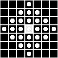

{kind=link}
| [mmImage] [Up] [mmInterval] | |
| Copyright (c) 2003, Roberto A. Lotufo, UNICAMP-University of Campinas; Rubens C. Machado, CenPRA-Renato Archer Research Center. |
| [mmImage] [Up] [mmInterval] | Data Types |
The structuring element is normally represented by a binary or int32 matrix that by convention the position of the origin [0,0] is at the center of the matrix. The structuring elements can be flat, represented by a binary matrix or non-flat, represented by an uint32 matrix. Sometimes, the structuring element can be represented by an internal data structure so that the best way to visualize a structuring element is by calling the function mmseshow which converts the structuring element to a matrix with the above conventions.
>>> print mmseshow(mmsecross())
[[0 1 0] [1 1 1] [0 1 0]]
>>> print mmseshow(mmsecross(),'non-flat')
[[-2147483647 0 -2147483647] [ 0 0 0] [-2147483647 0 -2147483647]]
>>> print mmseshow(mmbinary([0,1,1]))
[0 1 1]
>>> B = mmsecross(3)
>>> F = mmseshow(B,'expand')
>>> mmshow(F)
|  | |
| F |
| [mmImage] [Up] [mmInterval] | |
| Copyright (c) 2003, Roberto A. Lotufo, UNICAMP-University of Campinas; Rubens C. Machado, CenPRA-Renato Archer Research Center. |